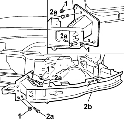
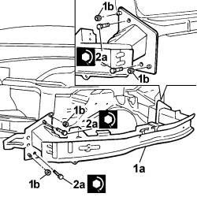

7210A18 R.R FRONT CROSSMEMBER
- Path
- Procedures > 72 PANELS AND FRAMES > 7210 REMOVING-REFITTING > 7210A STRUCTURAL ELEMENTS (FRONT PART) > 7210A18 R.R FRONT CROSSMEMBER
- Kind
- repair procedure (removal / refitting; the operation number is the code)
- Applies to
- all engines; all production periods
- Interactive page
- https://sloeber94.github.io/elrnDB-fCrm/en/#/194001215
Applies to: all engines; all production periods
 Removing
Removing
 Refitting
RefittingCheck that the components connected are not distorted by checking the bodyshell alignment measurements using suitable equipment (gauges, templates or jigs).
- Straighten the body as necessary.
Applies to: all engines; all production periods
1. Working on both sides, undo the fixing nuts.
2. Undo the fixing bolts (2a) and remove the crossmember (2b) from the bodyshell.

Applies to: all engines; all production periods
Refitting
Removing1. Position the crossmember (1a) and screw in the fixing nuts (1b) without tightening them.
- Align the crossmember correctly and tighten the fixing nuts.
2. Tighten the retaining bolts (2a) to the recommended torque.
Component | Fastening | dia | Value (daNm) | Validity |
|---|---|---|---|---|
WING TO LIGHT CLUSTER BASE MOUNTING BRACKET | Bolt | M8 | 6,4 ÷ 9,6 |
